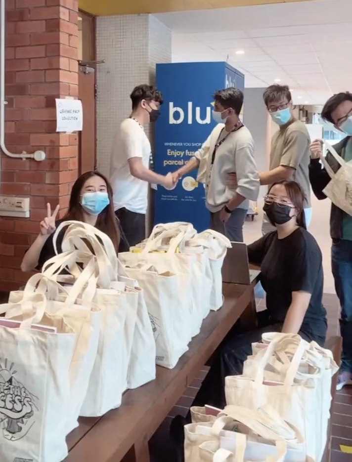
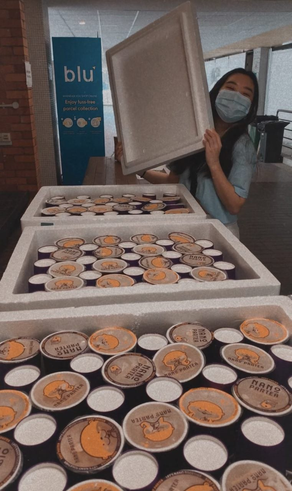
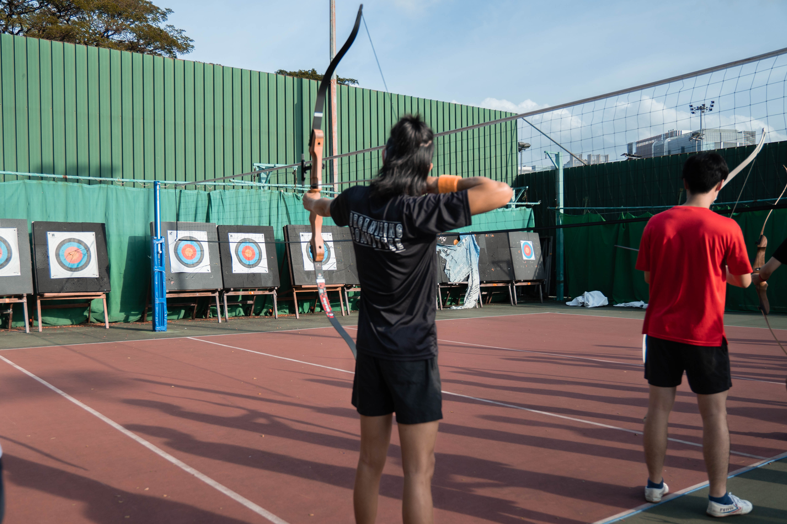
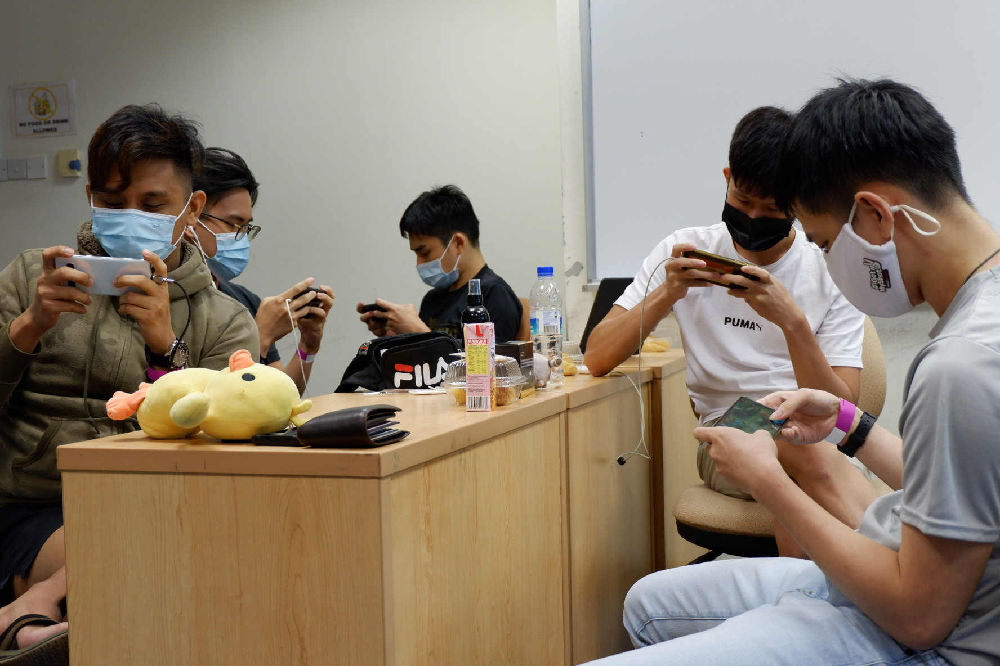

Internal Relations
Internal Relations is the People's Wing.
As the name suggests, our wing involves in fundamental student affairs, and addresses their problems,
requirements and challenges. We seek to be the Wing that connects the closest to the student body. We strive
at every action and step we do, to plan and organise initiatives with the students' needs in mind.
Under Internal Relations are the Welfare and Sports Cells; both of which are the pillars of a student's
well-being, their mental well-being (Welfare) as well as their physical well-being (Sports). By targeting
both aspects and providing good balance between both, we hope to ensure that every SOC student,
Needs are met, Problems are addressed, Challenges are tackled and thus feel understood.
Introduction
We are in charge of the welfare of the NUS Computing students! The Examination Welfare Pack (EWP), Wellness Fair and Ad-hoc Welfare Sessions are notable events planned and executed by us. Furthermore, we actively take note of our students' needs and wants with an always open feedback form.
Roles
As the directors, we recruit our subcommittee members, and overlook the planning and execution for the various welfare events. We act as the bridge between the project directors and the staff advisors to facilitate communication. Furthermore, we are the main planners for EWP, which is our largest event where we liaise with NUSSU.
Experience
We started off the journey not knowing what to expect, and we got to learn a lot along the way. One important lesson is that we should ensure that there is sufficient manpower to help out for each event. Though it may get tiring at times, the smile on the students' faces definitely made our efforts worthwhile.
Events
Despite it being a hybrid academic year, we managed to plan and execute various physical events that achieved great turnout.
Examination Welfare Pack (EWP)
EWP is an event that occurs every semester, where we give out free welfare packs to the student body. In collaboration with NUS Students' Union, we plan and procure items (like snacks and encouragement cards) that never fail to boost the students' morale as the final examination period nears.
Wellness Fair
Wellness fair is a series of workshops that caters to the participants' mental well-being, ranging from leather making to tote bag painting. It is an opportunity for students to relax and meet new friends with similar interests.


Ad-hoc Welfare Sessions
The Ad-hoc Welfare Session is a new initiative by the 24th Welfare Cell. We surprise the student body with various items such as bubble tea and donuts. The sessions are always well received by students with an overwhelming response, thus we are excited to see more of such sessions in the future.
Introduction
We are in charge of any and all Sports events conducted for the students of NUS Computing. We are also in charge of collaborating with the NUS Sports Club and other faculty Sports Cells to conduct Inter-faculty Games (IFG). We seek to provide students with a platform to bond with fellow students through sports as well as refresh and relax away from the rigour of academic life.
Roles
Our primary role is to plan various faculty level Sports events, and to recruit a subcommittee capable of supporting us in planning and executing those events, as well as liaise with NUS Sports Club and the other constituent faculty clubs to plan and execute IFG. We communicate with VP IR as well as the staff advisors to understand how we can better connect and reach out to the students through our events.
Experience
We learnt a lot over the process of recruitment, as well as getting our hands on the
planning process of the various events. We got to meet a lot of students who share the same passion in
sports as us, as well as watching people enjoy the events that were planned out for them. It was truly a
rewarding and memorable experience.
One important lesson we learnt was the importance of communication
between us and our various stakeholders, such as our PDs and the Computing students, as it serves as the
primary feedback loop through which we were able to further refine our events to cater to the needs of
the Computing students.
Events
Archery Fun Shoot
In collaboration with NUS Archery Society, we hosted the Archery Fun Shoot as we believe it is an activity that can appeal to people of all genders and sporting backgrounds. Following the success of the Archery Fun Shoot the previous AY, the introductory Archery event reached newer heights this AY with even more signups and participants.
E-Sports Night
With the increasing popularity of E-Sports accompanied by the restrictions of Covid-19, many from Computing have taken up e-games during their leisure time. Hence, with the aid of NUS E-Gaming, we hosted E-Sports Night. With the high vaccination rate in NUS, E-Sports Night provides an opportunity for the students of SoC to get together physically and learn from each other through games. Building on from last year, we decided to host Valorant & League of Legends and hopefully attract more participants by enticing those who play those games.

Sports Interest Group
A new initiative by the 24th MC Sports Cell, it was created with the intention of providing a semester-long ongoing platform for Computing students to forge friendships through playing sports together. Every once in a few weeks, they will get to play a different sport. It is a perfect way to get to know more people from your faculty!
FOP Sports Day
Traditionally, Sports Cell collaborates with the FOP Cell to conduct a Sports Day during FSC, with the relevant IFG Sports captains stepping in to host the related sports as well as use the camp as a platform to promote and entice freshmen to sign up for IFG.
IFG
We are in charge of liaising with NUS Sports Club to facilitate Computing participation in IFG. We recruit the IFG Computing captains and athletes, as well as host a couple of sports (Table Tennis & Valorant this year). It is certainly the Sports Cell's most challenging and exciting event, given the nature and scale of the event.